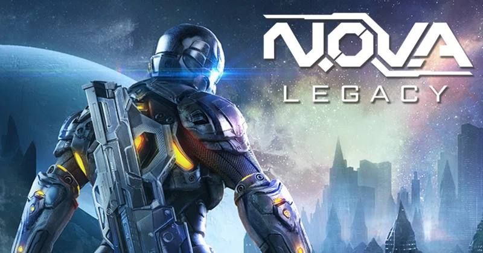

Shadowgun Legends is a free mobile first-person shooter video game developed and published by Madfinger Games for Android and iOS devices. It is the third primary installment of the Shadowgun series, and a sequel to the original Shadowgun and Shadowgun Deadzone, both multiple award-winning games from 2011 and 2012, respectively. It was released on March 22, 2018. It appeared on the Google Play Store on March 21, 2018. A release for the Nintendo Switch was announced in June of 2018 but never came to fruition. The game consists of 11 single-player campaign missions and over 40 side missions and many multiplayer game modes such as Duel, Capture The Flag, Dungeons and Arenas.

Command online shooter - pure action only! Code of War is the online shooter game with the best 3D graphics, realistic physics and the huge selection of actual guns. Try your skills and mastery in the dynamic online action versus other players from the whole world! Become the best and achieve first places in the global leaderboard. Improve your mastery and skills of your fighter to become more powerful! Fight shoulder by shoulder with your friends and achieve the higher ranks of the leaderboard in the modern online action game Code of War! Invite your friends and play together ABSOLUTELY FOR FREE!
.png)
Modern Strike Online: Can't get enough of PvP FPS action games? Looking for free killing first person shooter games around? Well, you're in luck! Modern Strike Online is everything you've ever wanted from a free FPS game and even more! Enjoy the coolest dynamic shooter game with PC quality graphics. Play online with your friends in the most tense first pershoon shooters and join action PvP battles to win and conquer! The mobile game in the vein of everyone's favorite Call of Duty, CSGO and PUBG!
.png)
Apex Legends is a free-to-play battle royale-hero shooter game developed by Respawn Entertainment and published by Electronic Arts. It was released for Microsoft Windows, PlayStation 4, and Xbox One in February 2019, for Nintendo Switch in March 2021, and for PlayStation 5 and Xbox Series X/S in March 2022. A mobile version of the game specially designed for touchscreens titled Apex Legends Mobile has also been announced which was released May 17, 2022 on Android and iOS. The game supports cross-platform play, excluding the mentioned mobile platforms.
.png)
Modern Combat 5, also known as Modern Combat 5: Blackout is a 2014 first-person shooter developed by Gameloft Bucharest and published by Gameloft. It is the fifth installment of the Modern Combat series and the sequel to Modern Combat 4: Zero Hour. It was released on July 24, 2014 for iOS, Android, Windows Phone 8, Windows 8.1 and BlackBerry 10, on October 24, 2018 for Steam, and for Nintendo Switch on February 14, 2019. It is the first game in the series that is developed by Gameloft Bucharest.

Starting off this best mobile FPS games 2021 list is also one of the newest games on it: PUBG New State. The latest in the PUBG series, New State is seemingly a sequel to the original PUBG and PUBG Mobile. Taking place decades after the events of PUBG, this is meant to be the future of PUBG.PUBG New State is by no means a bad game, or else it would not be on this list, but it is a strange one, for sure. In many ways, it does feel just like it is copying itself and what was done with PUBG Mobile, but with some minor UI changes, plus the brand new map of Troi.Troi is an alright map in PUBG New State, but one that is not as futuristic as hoped. That said, this is the latest PUBG game and, while the content is lacking right now, there is a strong chance that it will take the place of PUBG Mobile someday, so it might be worth jumping on board early with this very familiar but still interesting and fun battle royale title.
Going from one end of the spectrum to the other, we have one of the oldest games on this list: Dead Trigger 2. I remember downloading this game years ago as the showstopper that I would use to test out new Android phones that I was reviewing at the time.Little did I know that this story-based zombie adventure that pushed the envelope for graphics on mobile at the time would still be going strong in 2021. But that is the case and Dead Trigger 2 benefits from a great community and developers who support this game well.There is a reason that Dead Trigger 2 is still going strong today as it is the Left 4 Dead-like experience with many different regions, customization, and content to enjoy. Until Dead Trigger 3 someday comes out, hopefully, this is going to be one of the best zombie experiences you can find on mobile.
There are a lot of comparisons of Infinity Ops to Call of Duty Mobile, and for good reason. Set far into the future, this is a game that is filled with mechs and various classes that define the fast-paced and jetpack-centric gameplay. In many ways, it is also like the Titanfall series but for mobile.The game is pretty to look at, with nice sci-fi environments to explore and fun gunplay that helps to keep it engaging. The multiplayer is good, even though the game modes and maps are a bit lacking at this time. Hopefully, in the future, there will be more options for players to check out.That said, Infinity Ops is a great choice for the Infinite Warfare and Black Ops 3 fans out there who prefer a more floaty gameplay experience compared to the grounded nature of Call of Duty Mobile, or just want to try something different on the multiplayer side.

Moving away from the multiplayer-focused games for a bit, we have Hitman: Sniper, the quintessential Hitman experience on mobile. This spin-off of the assassin console and PC series takes Agent 47 to mobile by focusing his missions on being a sniper elite only.There are plenty of missions, areas, and customization that you can enjoy throughout the progression of the game as you attempt to take down your targets. As it is mentioned in the name, this is focused on sniping only, so you will not have some of the staples of the series.That said, the sniper elements are fantastic and nicely thought out, creating a strategic experience that feels uniquely built for mobile without sacrificing the fun of the Hitman series in general. Hitman fans who like mobile games should definitely not pass up on this fascinating spin-off title.

A common thread that you will find when looking up most of the games on this list is the fact that they will require an internet connection at all times, or at least most of the time, in order to play them. But what if you are someone who wants an offline mobile shooter and/or FPS game that is worth playing?That is when I always recommend Nova Legacy, the latest in the Nova series that defined almost console-like gameplay on mobile while looking visually great at the same time. The fight against the aliens continues in this title with a full-on story campaign and plenty of other side content to do.And if you do happen to have internet access for the game, you will be able to benefit from even more content, like the online multiplayer. You can take the skills that you have honed in the singleplayer story and apply them to the possibly more challenging battles against real players.

When it comes to visually stunning shooters on mobile, there is no reason to look any further than Dead Effect 2. The beautiful space adventure is equally horrifying as much as it is appealing to the eyes. The dark and gory FPS game is a different style from just about every other game on this list.With some definitely horror-like elements to it, Dead Effect 2 is a FPS take on what seems to be inspired by the third-person Dead Space series, right down to the setting, name, style, and slice and dice of enemies. With a surprisingly long story campaign and tons of content to enjoy, Dead Effect 2 is one for a console-like campaign that does not hold back.Though there are some issues in the game with grinding against bosses and the like for customization, the RPG features in Dead Effect 2 do help to add to the length and value of the experience. It is free-to-play, too, but with the usual microtransactions, some of which are more unfortunate than in other games.

What can be said about Fortnite than has already been said in the numerous other lists that it has been included in, like the best battle royale games of 2021? Fortnite took the world by storm when it first released and it only continued to dominate on mobile devices.Though the lawsuit issues with Apple and Google caused it to be taken off of the App Store and Google Play Store, respectively, it is still available for Android users at this time. Sorry, iOS fans who cannot play it, but there really is no battle royale game like Fortnite.A celebration of all things pop culture, with people like Ariana Grande fighting alongside fictional characters like Naruto, there is no battle royale like this one. Add in user-created content and there is so much that you can do in Fortnite that will keep you busy for ages to come.

While Fortnite is a fantastic game, it is, admittedly, one that does not put the gunplay and shooter elements of the battle royale experience first and foremost. On the other hand, PUBG Mobile is not only the game that popularized the genre, but one that is grounded in strong shooter gameplay. Able to be played in both first-person or third-person, PUBG Mobile is a competent mobile port of the original PC game that stands on its own right and has arguably surpassed its predecessor. With plenty of quality battle royale maps and other game modes, there is s a lot to love about this game.PUBG Mobile is also one of the grittier, more grounded takes on a mobile shooter that takes itself quite seriously. If you’re looking for an experience that has grown considerably over the last couple of years into a jam-packed, highly enjoyable mobile title, this might be the one for you.
Final Fantasy 7 The First SoldierAll of these elements are smartly built into the game, not feeling like shoe-horned attempts to make this related to the Final Fantasy series. The icing on the cake is the fact that it is also one of the best-looking and performing mobile games around, doing the Final Fantasy name justice. The only thing holding it back from first for now is that it is still new and, therefore, not having as much content as the next game on this list.

When it comes to the number one game on the best mobile FPS games 2021 list, there is none that can win at this time other than Call of Duty Mobile. The attempt to bring the series to mobile was an overwhelming and unprecedented success, fully realizing the best parts of the annualized military shooter on Android and iOS.For starters, there is the series’ classic gameplay that is here and perfectly translated into a mobile environment. The gunplay is fast and powerful, with immense customization, progression, and content. Call of Duty Mobile is unparalleled on mobile when it comes to what you can do in a gritty shooter gameFor those who like traditional multiplayer, there is that with the ever-growing list of maps from across the franchise and plenty of wonderful and familiar game modes. If you want something more battle royale style, you can enjoy one of the best battle royale experiences on mobile devices. And if you prefer Zombies, there is that, too, though this is definitely one part that should grow more. Call of Duty Mobile truly is a console-like experience on mobile that feels right and is easily the best mobile shooter game that you download for free on Android and iOS right now.